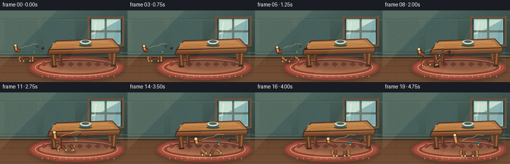
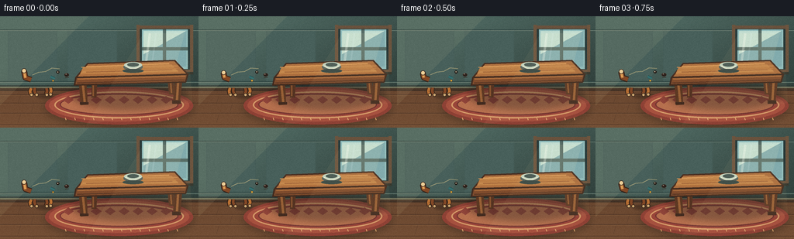
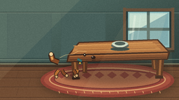
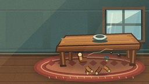
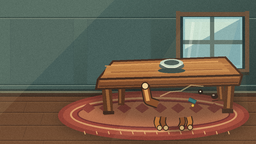

CODING AGENTS AS PIXEL WORLD MODELS
traex/DeepSeek-V4.1-Flash · dynamic_spatial_relationship_0000
点击播放 · 原生 RGB 像素
逐轮保存的候选
回放视频、检查图与代码变化。
每份候选均可单独播放。实际图片检查记录在下方工具轨迹中。
候选 01播放与检查图
点击播放 · 原生 RGB 像素


展开代码变化
--- 上一保存版本
+++ 本次保存版本
@@ -0,0 +1,448 @@
+from __future__ import annotations
+
+import math
+from pathlib import Path
+
+import numpy as np
+from PIL import Image, ImageDraw, ImageFilter
+
+import artifact_io
+
+
+ROOT = Path(__file__).resolve().parent
+WIDTH, HEIGHT = 256, 144
+FRAMES, FPS = 20, 4.0
+SS = 4
+W, H = WIDTH * SS, HEIGHT * SS
+
+
+def sc(value: float) -> float:
+ return value * SS
+
+
+def box(values: tuple[float, float, float, float]) -> tuple[int, int, int, int]:
+ return tuple(round(v * SS) for v in values)
+
+
+def xy(points: list[tuple[float, float]]) -> list[tuple[int, int]]:
+ return [(round(x * SS), round(y * SS)) for x, y in points]
+
+
+def ellipse_points(
+ cx: float, cy: float, rx: float, ry: float, angle: float = 0.0, count: int = 48
+) -> list[tuple[float, float]]:
+ ca, sa = math.cos(angle), math.sin(angle)
+ result = []
+ for i in range(count):
+ t = 2.0 * math.pi * i / count
+ x, y = rx * math.cos(t), ry * math.sin(t)
+ result.append((cx + x * ca - y * sa, cy + x * sa + y * ca))
+ return result
+
+
+def poly(draw: ImageDraw.ImageDraw, points: list[tuple[float, float]], fill, outline=None, width=1):
+ draw.polygon(xy(points), fill=fill)
+ if outline is not None:
+ draw.line(xy(points + [points[0]]), fill=outline, width=round(width * SS), joint="curve")
+
+
+def ell(
+ draw: ImageDraw.ImageDraw,
+ bounds: tuple[float, float, float, float],
+ fill,
+ outline=None,
+ width=1,
+):
+ draw.ellipse(box(bounds), fill=fill, outline=outline, width=round(width * SS))
+
+
+def add_grain(image: Image.Image, strength: float = 2.2) -> Image.Image:
+ array = np.asarray(image).astype(np.int16)
+ rng = np.random.default_rng(73021)
+ noise = rng.normal(0.0, strength * SS, (array.shape[0], array.shape[1], 1))
+ array = np.clip(array + noise, 0, 255).astype(np.uint8)
+ return Image.fromarray(array, "RGB")
+
+
+def build_background() -> Image.Image:
+ image = Image.new("RGB", (W, H), (54, 79, 76))
+ pixels = np.zeros((H, W, 3), dtype=np.uint8)
+
+ # Deep blue-green wall with a soft diagonal falloff.
+ yy, xx = np.mgrid[0:H, 0:W]
+ wall_light = np.clip(1.15 - 0.32 * xx / W - 0.30 * yy / H, 0.55, 1.0)
+ base = np.array([76, 101, 94], dtype=np.float32)
+ pixels[:] = np.clip(base[None, None, :] * wall_light[:, :, None], 0, 255).astype(np.uint8)
+
+ # Wainscot panels make the room read at low resolution.
+ for panel_x in (10, 87):
+ x0, x1 = int(panel_x * SS), int((panel_x + 64) * SS)
+ pixels[int(17 * SS) : int(84 * SS), x0:x1] = (72, 95, 90)
+ pixels[int(18 * SS) : int(83 * SS), x0 + 2 : x1 - 2] = (67, 91, 86)
+ pixels[int(19 * SS) : int(82 * SS), x0 + 4 : x1 - 4] = (72, 96, 91)
+ image = Image.fromarray(pixels)
+ draw = ImageDraw.Draw(image)
+
+ # Horizontal wall panel seams.
+ for y in (17, 84):
+ draw.rectangle(box((0, y, WIDTH, y + 1)), fill=(45, 67, 64))
+ draw.line(xy([(0, y + 1.2), (WIDTH, y + 1.2)]), fill=(103, 122, 111), width=SS)
+
+ # A bright window gives the table a recognizable room setting.
+ draw.rectangle(box((180, 14, 245, 71)), fill=(39, 58, 58))
+ draw.rectangle(box((183, 17, 242, 68)), fill=(143, 188, 188))
+ draw.rectangle(box((185, 19, 240, 65)), fill=(176, 210, 204))
+ draw.polygon(xy([(185, 19), (240, 19), (185, 60)]), fill=(192, 221, 211))
+ draw.polygon(xy([(185, 49), (240, 19), (240, 65), (185, 65)]), fill=(124, 169, 174))
+ draw.rectangle(box((210, 17, 214, 68)), fill=(79, 103, 99))
+ draw.rectangle(box((183, 40, 242, 44)), fill=(79, 103, 99))
+ draw.rectangle(box((178, 12, 247, 16)), fill=(106, 82, 61))
+ draw.rectangle(box((178, 69, 247, 73)), fill=(106, 82, 61))
+ draw.rectangle(box((176, 11, 180, 74)), fill=(109, 85, 63))
+ draw.rectangle(box((245, 11, 249, 74)), fill=(109, 85, 63))
+ draw.rectangle(box((176, 72, 249, 75)), fill=(57, 58, 48))
+
+ # Sun patches and glass reflection.
+ sun_layer = Image.new("RGBA", (W, H), (0, 0, 0, 0))
+ sun = ImageDraw.Draw(sun_layer, "RGBA")
+ sun.polygon(xy([(185, 22), (238, 22), (226, 65), (185, 65)]), fill=(255, 246, 190, 24))
+ sun.line(xy([(193, 22), (188, 61)]), fill=(255, 255, 236, 92), width=3 * SS)
+ sun.line(xy([(201, 22), (196, 61)]), fill=(255, 255, 236, 45), width=2 * SS)
+ image = Image.alpha_composite(image.convert("RGBA"), sun_layer).convert("RGB")
+ draw = ImageDraw.Draw(image)
+
+ # Floor: warm boards contrasting with the cool wall.
+ floor_y = 93
+ for y in range(floor_y * SS, H):
+ t = (y / SS - floor_y) / (HEIGHT - floor_y)
+ color = (
+ round(104 + 12 * t),
+ round(70 + 9 * t),
+ round(47 + 6 * t),
+ )
+ draw.line([(0, y), (W, y)], fill=color, width=1)
+ for index, y in enumerate((101, 112, 125, 140)):
+ draw.line(xy([(0, y), (WIDTH, y)]), fill=(70, 49, 37), width=2)
+ offset = 17 if index % 2 else 0
+ for x in range(-40 + offset, WIDTH + 60, 67):
+ draw.line(xy([(x, y), (x - 4, y + 12)]), fill=(76, 52, 38), width=1)
+ draw.line(xy([(0, y + 1.4), (WIDTH, y + 1.4)]), fill=(135, 96, 63), width=1)
+
+ # Baseboard and floor contact shadow.
+ draw.rectangle(box((0, 89, WIDTH, 96)), fill=(47, 61, 57))
+ draw.rectangle(box((0, 91, WIDTH, 93)), fill=(114, 114, 91))
+ draw.rectangle(box((0, 93, WIDTH, 96)), fill=(70, 52, 39))
+ draw.line(xy([(0, 96), (WIDTH, 96)]), fill=(42, 35, 30), width=2)
+
+ # Rug beneath the table and dog.
+ rug_shadow = Image.new("RGBA", (W, H), (0, 0, 0, 0))
+ rs = ImageDraw.Draw(rug_shadow, "RGBA")
+ rs.ellipse(box((58, 91, 249, 144)), fill=(29, 25, 22, 80))
+ rug_shadow = rug_shadow.filter(ImageFilter.GaussianBlur(5 * SS))
+ image = Image.alpha_composite(image.convert("RGBA"), rug_shadow).convert("RGB")
+ draw = ImageDraw.Draw(image)
+ ell(draw, (58, 91, 249, 140), (142, 65, 53))
+ ell(draw, (63, 94, 244, 136), (166, 81, 63))
+ ell(draw, (70, 97, 237, 132), (154, 70, 58), (213, 154, 104), 2)
+ ell(draw, (77, 100, 230, 128), (182, 112, 78), (116, 53, 50), 1.5)
+ for x in range(88, 224, 18):
+ draw.polygon(
+ xy([(x, 103), (x + 7, 108), (x, 113), (x - 7, 108)]),
+ fill=(143, 68, 57),
+ )
+ for x in range(84, 235, 12):
+ draw.line(xy([(x, 131), (x + 1, 134)]), fill=(221, 169, 111), width=SS)
+
+ # Table shadow and legs are behind the top.
+ shadow = Image.new("RGBA", (W, H), (0, 0, 0, 0))
+ sd = ImageDraw.Draw(shadow, "RGBA")
+ sd.ellipse(box((92, 83, 241, 121)), fill=(31, 25, 22, 92))
+ shadow = shadow.filter(ImageFilter.GaussianBlur(4 * SS))
+ image = Image.alpha_composite(image.convert("RGBA"), shadow).convert("RGB")
+ draw = ImageDraw.Draw(image)
+
+ # Back legs.
+ draw.polygon(xy([(118, 77), (126, 77), (124, 105), (118, 105)]), fill=(85, 52, 34))
+ draw.polygon(xy([(215, 73), (223, 73), (225, 101), (218, 101)]), fill=(89, 55, 36))
+ draw.line(xy([(120, 79), (120, 103)]), fill=(135, 84, 48), width=2 * SS)
+ draw.line(xy([(219, 76), (221, 99)]), fill=(142, 89, 50), width=2 * SS)
+
+ # Front legs with subtle perspective taper.
+ draw.polygon(xy([(101, 79), (111, 80), (113, 114), (104, 115)]), fill=(92, 56, 35))
+ draw.polygon(xy([(226, 73), (236, 72), (232, 111), (223, 112)]), fill=(88, 53, 34))
+ draw.line(xy([(106, 82), (109, 111)]), fill=(151, 96, 54), width=3 * SS)
+ draw.line(xy([(230, 77), (228, 108)]), fill=(151, 96, 54), width=3 * SS)
+ draw.rectangle(box((103, 111, 114, 114)), fill=(65, 43, 32))
+ draw.rectangle(box((222, 109, 233, 113)), fill=(65, 43, 32))
+
+ # Thick table top, trapezoidal in perspective.
+ top = [(98, 79), (113, 61), (225, 57), (242, 75)]
+ poly(draw, top, (172, 111, 63), (73, 47, 34), 2)
+ draw.polygon(xy([(107, 66), (221, 62), (230, 72), (103, 75)]), fill=(191, 130, 72))
+ for y, color in ((66, (199, 139, 80)), (69, (185, 122, 67)), (72, (202, 144, 84)), (75, (178, 113, 62))):
+ draw.line(xy([(105 + (y - 66) * 0.2, y), (229, y - 2)]), fill=color, width=round(1.2 * SS))
+ draw.line(xy([(111, 65), (218, 61)]), fill=(218, 157, 91), width=round(1.5 * SS))
+ draw.line(xy([(111, 72), (222, 69)]), fill=(151, 91, 54), width=1 * SS)
+
+ # Front apron and its bevel.
+ apron = [(98, 79), (242, 75), (239, 85), (96, 89)]
+ poly(draw, apron, (127, 76, 45), (65, 43, 31), 2)
+ draw.line(xy([(100, 81), (239, 77)]), fill=(166, 105, 59), width=2 * SS)
+ draw.line(xy([(99, 86), (238, 82)]), fill=(91, 56, 37), width=round(1.5 * SS))
+
+ # A ceramic bowl on the table.
+ ell(draw, (159, 61, 184, 70), (87, 98, 91))
+ ell(draw, (160, 59, 183, 67), (194, 211, 191))
+ ell(draw, (164, 60, 179, 65), (71, 89, 84))
+ draw.arc(box((162, 58, 181, 68)), 10, 170, fill=(234, 236, 211), width=SS)
+ draw.ellipse(box((158, 68, 185, 73)), fill=(56, 72, 68))
+
+ # A final soft top-left light wash.
+ wash = Image.new("RGBA", (W, H), (0, 0, 0, 0))
+ wd = ImageDraw.Draw(wash, "RGBA")
+ wd.polygon(xy([(0, 0), (114, 0), (0, 115)]), fill=(255, 238, 183, 18))
+ image = Image.alpha_composite(image.convert("RGBA"), wash).convert("RGB")
+ return add_grain(image, 1.8)
+
+
+BG = build_background()
+
+
+def dog_pose(frame: int) -> tuple[float, float, float, float, float]:
+ """Return x, ground y, scale, body bounce, gait phase."""
+ keys = [
+ (0, 58.0, 102.0, 0.90),
+ (3, 60.0, 102.0, 0.91),
+ (6, 78.0, 105.0, 0.94),
+ (9, 112.0, 113.0, 0.98),
+ (12, 151.0, 121.0, 1.04),
+ (15, 178.0, 128.0, 1.10),
+ (19, 180.0, 128.5, 1.11),
+ ]
+ for i in range(len(keys) - 1):
+ a, b = keys[i], keys[i + 1]
+ if a[0] <= frame <= b[0]:
+ t = (frame - a[0]) / (b[0] - a[0])
+ t = t * t * (3.0 - 2.0 * t)
+ x = a[1] + (b[1] - a[1]) * t
+ y = a[2] + (b[2] - a[2]) * t
+ s = a[3] + (b[3] - a[3]) * t
+ moving = 3 < frame < 16
+ bounce = -abs(math.sin((frame - 4) * math.pi / 2.0)) * 1.15 if moving else 0.0
+ phase = (frame - 4) * math.pi / 2.2
+ return x, y, s, bounce, phase
+ return 180.0, 128.5, 1.11, 0.0, 0.0
+
+
+def transform_point(x: float, y: float, cx: float, cy: float, scale: float, tilt: float = 0.0):
+ ca, sa = math.cos(tilt), math.sin(tilt)
+ return cx + scale * (x * ca - y * sa), cy + scale * (x * sa + y * ca)
+
+
+def draw_dog(frame: int) -> Image.Image:
+ layer = Image.new("RGBA", (W, H), (0, 0, 0, 0))
+ draw = ImageDraw.Draw(layer, "RGBA")
+ cx, ground, scale, bounce, phase = dog_pose(frame)
+ cx *= SS
+ ground = (ground + bounce) * SS
+ scale *= SS
+ moving = 3 < frame < 16
+ settled = frame >= 16
+
+ outline = (51, 34, 25, 255)
+ fur = (184, 112, 52, 255)
+ fur_dark = (130, 72, 38, 255)
+ fur_light = (221, 157, 85, 255)
+ cream = (238, 207, 151, 255)
+ cream_shadow = (205, 167, 113, 255)
+ collar = (53, 111, 111, 255)
+ gold = (229, 180, 67, 255)
+
+ # Tail: a short upward curl with a little wag.
+ if moving:
+ tail_tip = (-31, -34 + 4 * math.sin(phase * 0.55))
+ tail_mid = (-29, -24 + 3 * math.sin(phase * 0.55 + 0.6))
+ else:
+ wag = 3.5 * math.sin(frame * 0.9)
+ tail_tip = (-30 + wag * 0.4, -35 + wag)
+ tail_mid = (-28 + wag * 0.2, -25)
+ p0 = transform_point(-20, -22, cx, ground, scale)
+ p1 = transform_point(*tail_mid, cx, ground, scale)
+ p2 = transform_point(*tail_tip, cx, ground, scale)
+ draw.line([p0, p1, p2], fill=outline, width=round(8.4 * scale), joint="curve")
+ draw.line([p0, p1, p2], fill=fur_dark, width=round(6.0 * scale), joint="curve")
+ draw.line([p1, p2], fill=fur_light, width=round(3.2 * scale), joint="curve")
+ draw.ellipse(
+ (
+ p2[0] - 3.4 * scale,
+ p2[1] - 3.4 * scale,
+ p2[0] + 3.4 * scale,
+ p2[1] + 3.4 * scale,
+ ),
+ fill=cream,
+ outline=outline,
+ width=round(0.8 * scale),
+ )
+
+ # Legs: opposing diagonal pairs while running, planted at the ends.
+ if moving:
+ swing = 7.2 * math.sin(phase)
+ lift_a = 3.0 * max(0.0, math.sin(phase))
+ lift_b = 3.0 * max(0.0, -math.sin(phase))
+ elif settled:
+ swing = 1.2 * math.sin(frame * 0.45)
+ lift_a = lift_b = 0.0
+ else:
+ swing = 0.6 * math.sin(frame * 0.55)
+ lift_a = lift_b = 0.0
+
+ leg_specs = [
+ (8.0, -10.5, 7.0 + swing, -1.5 - lift_a, fur),
+ (2.0, -10.0, 1.5 - swing, -1.0 - lift_b, fur_dark),
+ (-15.0, -10.5, -13.0 - swing, -1.0 - lift_b, fur_dark),
+ (-20.0, -10.0, -20.5 + swing, -1.0 - lift_a, fur),
+ ]
+ for hip_x, hip_y, foot_x, foot_y, leg_color in leg_specs:
+ hip = transform_point(hip_x, hip_y, cx, ground, scale)
+ knee = transform_point(
+ (hip_x + foot_x) / 2 + (1.2 if hip_x > 0 else -1.2),
+ (hip_y + foot_y) / 2,
+ cx,
+ ground,
+ scale,
+ )
+ foot = transform_point(foot_x, foot_y, cx, ground, scale)
+ draw.line([hip, knee, foot], fill=outline, width=round(5.7 * scale), joint="curve")
+ draw.line([hip, knee, foot], fill=leg_color, width=round(3.9 * scale), joint="curve")
+ paw = transform_point(foot_x + 1.2, foot_y + 0.5, cx, ground, scale)
+ r = 2.5 * scale
+ draw.ellipse((paw[0] - r, paw[1] - r, paw[0] + r, paw[1] + r), fill=cream_shadow, outline=outline, width=round(0.7 * scale))
+
+ # Body and chest.
+ body_pts = [transform_point(*p, cx, ground, scale) for p in ellipse_points(-4, -22, 18.5, 10.2, -0.08)]
+ poly(draw, body_pts, fur, outline, 1.4)
+ chest_pts = [transform_point(*p, cx, ground, scale) for p in ellipse_points(7, -20, 9.0, 10.3, 0.16)]
+ poly(draw, chest_pts, cream, (134, 84, 44, 255), 0.9)
+ body_high_pts = [transform_point(*p, cx, ground, scale) for p in ellipse_points(-5, -27, 13.0, 3.1, -0.08)]
+ poly(draw, body_high_pts, fur_light)
+
+ # Neck and head.
+ neck = [(-1, -27), (8, -33), (14, -26), (7, -17)]
+ poly(draw, [transform_point(*p, cx, ground, scale) for p in neck], fur, outline, 1.2)
+ head_pts = [transform_point(*p, cx, ground, scale) for p in ellipse_points(16, -31, 10.5, 9.3, 0.20)]
+ poly(draw, head_pts, fur, outline, 1.4)
+ head_light_pts = [
+ transform_point(*p, cx, ground, scale)
+ for p in ellipse_points(15.5, -35, 7.2, 3.0, 0.12)
+ ]
+ poly(draw, head_light_pts, fur_light)
+
+ # Snout, nose, mouth and cheek.
+ snout_pts = [transform_point(*p, cx, ground, scale) for p in ellipse_points(25, -28.3, 8.4, 5.2, 0.05)]
+ poly(draw, snout_pts, cream, (128, 81, 48, 255), 1.0)
+ jaw_pts = [transform_point(*p, cx, ground, scale) for p in ellipse_points(24.5, -24.3, 6.1, 3.1, -0.05)]
+ poly(draw, jaw_pts, cream_shadow)
+ nose = transform_point(31.2, -29.0, cx, ground, scale)
+ draw.ellipse(
+ (
+ nose[0] - 3.2 * scale,
+ nose[1] - 2.4 * scale,
+ nose[0] + 3.2 * scale,
+ nose[1] + 2.4 * scale,
+ ),
+ fill=(44, 32, 28, 255),
+ outline=outline,
+ width=round(0.7 * scale),
+ )
+ nose_glint = transform_point(30.2, -30.1, cx, ground, scale)
+ draw.ellipse(
+ (
+ nose_glint[0] - 1.0 * scale,
+ nose_glint[1] - 0.6 * scale,
+ nose_glint[0] + 1.0 * scale,
+ nose_glint[1] + 0.6 * scale,
+ ),
+ fill=(158, 139, 122, 255),
+ )
+ mouth_a = transform_point(29.0, -24.8, cx, ground, scale)
+ mouth_b = transform_point(34.3, -25.5, cx, ground, scale)
+ draw.line([mouth_a, mouth_b], fill=outline, width=round(0.9 * scale))
+
+ # Eye, brow and floppy ear.
+ eye = transform_point(18.5, -33.0, cx, ground, scale)
+ er = 2.15 * scale
+ draw.ellipse((eye[0] - er, eye[1] - er, eye[0] + er, eye[1] + er), fill=(38, 29, 24, 255))
+ draw.ellipse(
+ (eye[0] - 0.72 * scale, eye[1] - 0.85 * scale, eye[0] + 0.42 * scale, eye[1] + 0.25 * scale),
+ fill=(255, 244, 209, 255),
+ )
+ ear = [transform_point(*p, cx, ground, scale) for p in [(9.5, -38), (18.0, -39), (21.2, -31), (15.0, -26), (8.0, -30)]]
+ poly(draw, ear, fur_dark, outline, 1.2)
+ ear_light = [transform_point(*p, cx, ground, scale) for p in [(11, -36), (17.5, -36.5), (18.5, -32), (14.5, -29), (10.5, -31)]]
+ poly(draw, ear_light, (163, 91, 45, 255))
+
+ # Collar and small gold tag.
+ c0 = transform_point(8, -26.5, cx, ground, scale)
+ c1 = transform_point(14, -23.8, cx, ground, scale)
+ draw.line([c0, c1], fill=(29, 74, 75, 255), width=round(4.1 * scale))
+ draw.line([c0, c1], fill=collar, width=round(2.8 * scale))
+ tag = transform_point(11.5, -20.7, cx, ground, scale)
+ tr = 1.5 * scale
+ draw.ellipse((tag[0] - tr, tag[1] - tr, tag[0] + tr, tag[1] + tr), fill=gold, outline=(105, 72, 31, 255), width=round(0.45 * scale))
+
+ # Warm rim light along the back and head.
+ rim = Image.new("RGBA", (W, H), (0, 0, 0, 0))
+ rd = ImageDraw.Draw(rim, "RGBA")
+ rim_points = [transform_point(*p, cx, ground, scale) for p in [(-18, -29), (-9, -33), (1, -34), (10, -39), (21, -38)]]
+ rd.line(rim_points, fill=(255, 222, 150, 120), width=round(1.1 * scale), joint="curve")
+ layer = Image.alpha_composite(layer, rim)
+ return layer
+
+
+def draw_dog_shadow(frame: int) -> Image.Image:
+ cx, ground, scale, bounce, phase = dog_pose(frame)
+ shadow = Image.new("RGBA", (W, H), (0, 0, 0, 0))
+ draw = ImageDraw.Draw(shadow, "RGBA")
+ width = 25 * scale
+ height = 5.4 * scale
+ cy = ground + 1.1
+ draw.ellipse(
+ (
+ (cx - width / 2) * SS,
+ (cy - height / 2) * SS,
+ (cx + width / 2) * SS,
+ (cy + height / 2) * SS,
+ ),
+ fill=(33, 24, 20, 105),
+ )
+ return shadow.filter(ImageFilter.GaussianBlur(1.7 * SS))
+
+
+def add_scene_details(image: Image.Image, frame: int) -> Image.Image:
+ # Very subtle projector-style light bloom, fixed in the room.
+ glow = Image.new("RGBA", (W, H), (0, 0, 0, 0))
+ gd = ImageDraw.Draw(glow, "RGBA")
+ gd.polygon(xy([(187, 19), (241, 19), (248, 112), (111, 141)]), fill=(255, 226, 166, 12))
+ image = Image.alpha_composite(image.convert("RGBA"), glow).convert("RGB")
+ return image
+
+
+def render() -> np.ndarray:
+ frames = []
+ for index in range(FRAMES):
+ image = BG.copy()
+ image = image.convert("RGBA")
+ shadow = draw_dog_shadow(index)
+ image = Image.alpha_composite(image, shadow)
+ dog = draw_dog(index)
+ image = Image.alpha_composite(image, dog)
+ image = add_scene_details(image.convert("RGB"), index)
+ frame = image.resize((WIDTH, HEIGHT), Image.Resampling.LANCZOS)
+ frames.append(np.asarray(frame, dtype=np.uint8).copy())
+ return np.stack(frames)
+
+
+if __name__ == "__main__":
+ rendered = render()
+ artifact_io.save(rendered, ROOT)
+ print(f"saved {rendered.shape} to {ROOT}")
可观测工具轨迹
实际执行的命令与返回图片。
命令 1exit 0
/bin/bash -c "pwd && rg --files -g '"'!**/.git/**'"'"
命令 2exit 0
/bin/bash -c "sed -n '1,240p' prompt.txt"
命令 3exit 0
/bin/bash -c "sed -n '1,280p' GENERATION_RULES.md"
命令 4exit 0
/bin/bash -c 'cat task_spec.json'
命令 5exit 0
/bin/bash -c "sed -n '1,260p' artifact_io.py"
命令 6exit 0
/bin/bash -c "sed -n '1,260p' player_template.html"
命令 7exit 0
/bin/bash -c "find . -maxdepth 2 -type f -printf '%p %s bytes\\n' | sort && python - <<'PY' import importlib.util for m in ['PIL','numpy','cv2','imageio','scipy','matplotlib']: print(m, bool(importlib.util.find_spec(m))) PY"
命令 8exit 1
/bin/bash -c 'python generate.py'
命令 9exit 0
/bin/bash -c "rg -n 'width=.*SS|fromarray\\(' generate.py"命令 10exit 0
/bin/bash -c 'python generate.py'
命令 11exit 0
/bin/bash -c "find . -maxdepth 2 -type f -printf '%p %s bytes\\n' | sort"
命令 12exit 0
/bin/bash -c "python -m py_compile generate.py && python - <<'PY'
import json, numpy as np
s=json.load(open('task_spec.json'))
z=np.load('pixels.npz')['pixels']
print('spec',s)
print('packed tensor',z.shape,z.dtype)
print('npz/player present',__import__('pathlib').Path('index.html').stat().st_size)
PY"命令 13exit 0
/bin/bash -c "python - <<'PY'
from pathlib import Path
import numpy as np
from PIL import Image
files=sorted(Path('frames').glob('*.png'))
arr=np.stack([np.asarray(Image.open(p)) for p in files])
print('frames',len(files),'shape',arr.shape,'dtype',arr.dtype)
print('range',int(arr.min()),int(arr.max()),'mean',float(arr.mean()))
d=np.abs(np.diff(arr.astype(np.int16),axis=0)).mean(axis=(1,2,3))
print('temporal mean abs diff',np.round(d,2).tolist())
print('unique colors per frame', [len(np.unique(f.reshape(-1,3),axis=0)) for f in arr])
PY"视觉工具实际返回图片 1

视觉工具实际返回图片 2

视觉工具实际返回图片 3

视觉工具实际返回图片 4

保存候选 1 份；完成命令 13 次；可验证图片返回 4 张。原始 API 响应与完整日志保留在本地。